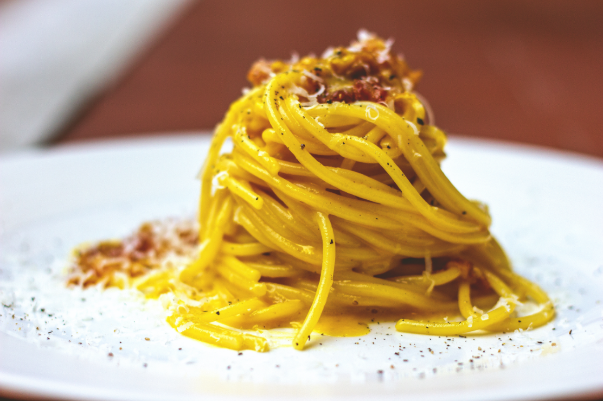

Carbonara

Una carbonara deliziosa
For those who know Rome well, Vicolo della Scrofa is one of the most characteristic streets, rich in symbolism. It seems that the first Carbonara was made in 1944 in a trattoria there, hence the name of the alley. The most reliable story in fact relates the encounter between the ingredients available to the American soldiers and the imagination of a Roman cook. The result was the prototype of spaghetti alla carbonara: eggs, bacon (later guanciale) and cheese.
Gradually the recipe evolved to the one we all know and love today and we can appreciate it in our Roman (and voracious!) friends' homes, in a trattorias or in starred restaurants of the capital alike, throughout Italy and abroad, in countless versions: with or without pepper, with one yolk per person or the addition of at least one whole egg, with guanciale or strips of bacon. The carbonara sauce is prepared in a matter of minutes. Just think that all you need is spicy guanciale cut into strips, a golden cream made with yolks (in our version) and a lot of grated Pecorino cheese. With its simplicity and the richness of ingredients, the recipe for spaghetti carbonara is closely related to two other cornerstones of genuine Italian cuisine: the amatriciana and the gricia! Take a dip into popular Rome with us, discover how to make very creamy spaghetti carbonara, and let us know if you like our version!
Ingredients
- Spaghetti 0.7 lb (320 g)
- Egg yolks 6 - average size
- Black pepper to taste
- Guanciale 5 oz (150 g)
- Pecorino Romano cheese ½ cup (50 g)
Steps
- To prepare spaghetti carbonara start by putting a pot of salted water on the burner to cook the pasta. In the meantime, remove the pork rind from the guanciale 1 and cut it first into slices and then into strips about 1/2" (1cm) 2 thick. The removed rind can be reused to flavor other things. Put the pieces into a non-stick pan 3 and brown for about 15 minutes over medium heat, being careful not to burn it or it will smell too strong.
- Meanwhile, put spaghetti in boiling water 4 and cook for the time indicated on the package. In the meantime, pour the yolks into a bowl 5, add most of the Pecorino cheese needed for the recipe and the remaining part will be used just before serving.
- Season with black pepper 7 and whip by hand 8. Add a tablespoon of cooking water to dilute the mixture and stir 9.
- In the meantime the guanciale will be cooked, turn off the burner and set it aside 10. Drain the pasta al dente directly into the pan with the guanciale 11 and stir it briefly to season it. Remove from heat and pour the mixture of eggs and pecorino cheese 12 into the pan. Mix quickly to combine.
- To make it very creamy, if necessary, you can add a little cooking water to your pasta 13. Serve spaghetti carbonara immediately with the remaining pecorino cheese 14 and ground black pepper 15 on top.